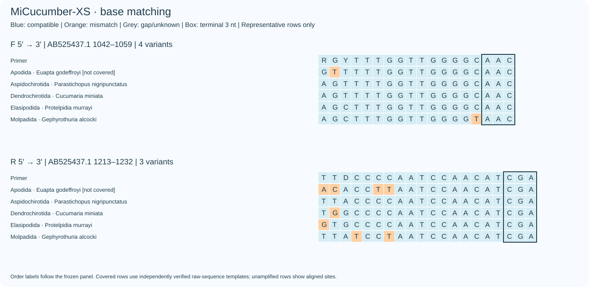
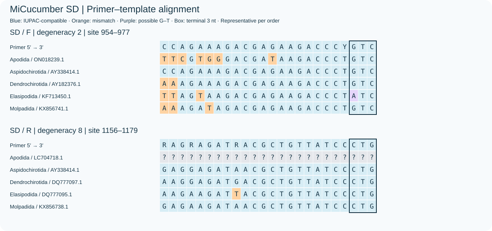
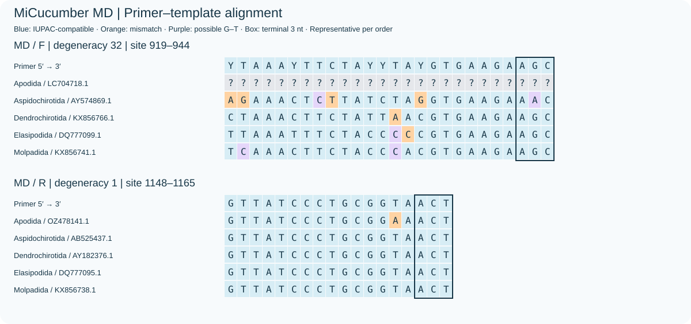
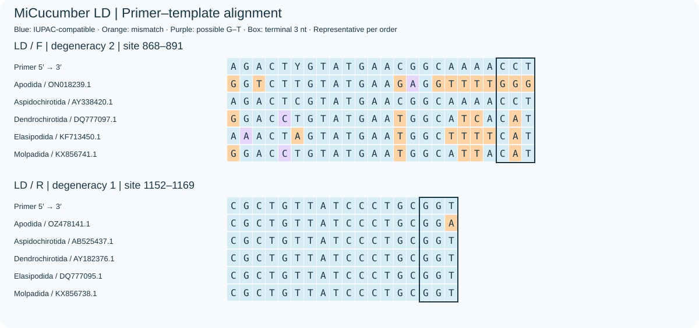
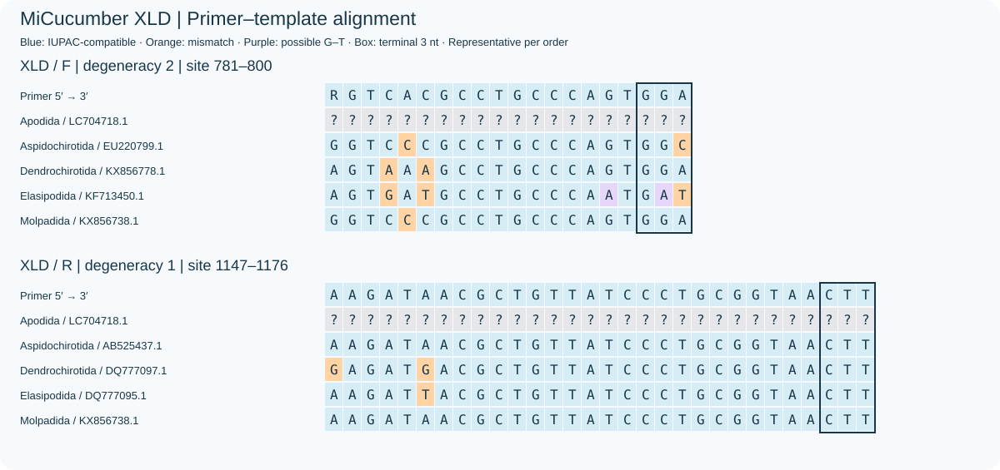

中文 · English · Current D selection / 当前D方案
目间等权覆盖，包含Apodida；使用5个冻结目标签。Current D assays are selected from independently verified fixed-coordinate candidates.





Full candidate comparison · Copyright